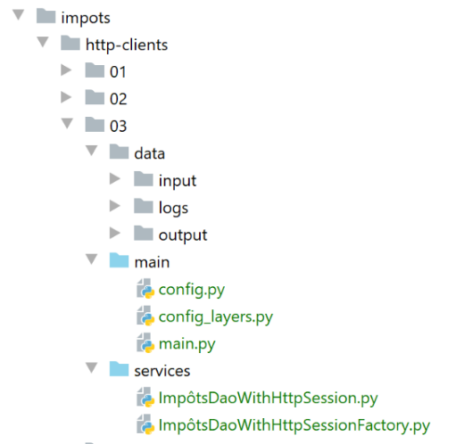
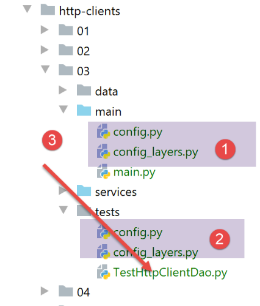

25. 应用练习：第 8 版
25.1. 简介
我们将编写一个新的客户端/服务器应用程序。该服务器的全新特性在于它将管理会话。我们将税务管理数据放置在 [会话] 作用域对象中，而非 [应用程序] 作用域对象中。这样做会降低代码的性能。 当一个对象可以被所有用户以只读模式共享时，将其设为 [application] 作用域对象比设为 [session] 作用域对象更为可取。由于这会减小会话 Cookie 的大小，因此我们至少能节省一些带宽。但我们希望演示一个客户端与服务器之间交换会话 Cookie 的客户端/服务器应用程序。
应用程序架构保持不变：

25.2. Web 服务器
服务器脚本的目录结构如下：

[http-servers/03] 文件夹最初是通过复制 [http-servers/02] 文件夹创建的。随后对其进行了修改。
25.2.1. 配置
与 |上一版本| 相同，仅在 [config] 脚本中进行了少量修改：
# dépendances absolues
absolute_dependencies = [
# dossiers du projet
# BaseEntity, MyException
f"{root_dir}/classes/02/entities",
# InterfaceImpôtsDao, InterfaceImpôtsMétier, InterfaceImpôtsUi
f"{root_dir}/impots/v04/interfaces",
# AbstractImpôtsdao, ImpôtsConsole, ImpôtsMétier
f"{root_dir}/impots/v04/services",
# ImpotsDaoWithAdminDataInDatabase
f"{root_dir}/impots/v05/services",
# AdminData, ImpôtsError, TaxPayer
f"{root_dir}/impots/v04/entities",
# Constantes, Tranches
f"{root_dir}/impots/v05/entities",
# index_controller
f"{script_dir}/../controllers",
# scripts [config_database, config_layers]
script_dir,
# Logger, SendAdminMail
f"{root_dir}/impots/http-servers/02/utilities",
]
- 第 17 行：我们将重写 [index] 函数的控制器，用于处理 / URL；
- 第 21 行：我们使用 |上一版本| 中的实用工具；
25.2.2. 主脚本 [main]
新的 [main] 脚本对上一版本的主 [main] 脚本进行了一些改动：
# l'application Flask peut démarrer
app = Flask(__name__)
# clé secrète de la session
app.secret_key = os.urandom(12).hex()
- 第 4 行：我们为应用程序创建一个密钥。我们知道这是会话管理所必需的；
接下来，[main] 代码中不再请求税务数据。以下几行代码被移除：
此外，[index_controller] 控制器还接受一个额外参数，即 Flask 会话：
25.2.3. [index_controller] 控制器
[index_controller] 控制器现在管理一个会话：
- 第 14 行：控制器从 Web 客户端接收当前会话；
- 第 35–38 行：如果客户端有会话，则该会话包含两个键：
- [client_id]：客户端 ID（第 37 行）；
- [admindata]：以字典形式存储的税务管理数据（第 38 行）；
- 第 35 行：检查会话是否包含预期的两个键之一；
- 第 42–51 行：处理客户端会话尚未初始化的情况；
- 第 43 行：从 [dao] 层检索税务机关数据；
- 第 45 行：将该数据以字典形式存入会话；
- 第 48 行：为客户分配一个随机数。该数值对每个客户而言均不相同；
- 第 49 行：将该数字存储在会话中；
- 第 51 行：记录 [dao] 层已检索税务机关数据的事实。访问 [dao] 层通常成本较高，因此必须加以限制。 此处的思路是：从 [dao] 层一次性检索税务数据，将其存储在会话中，并在同一客户端的后续请求中从会话中获取。请注意，这并非最佳解决方案。由于来自税务局的税务数据对所有客户端都是一样的，因此它应属于应用程序范围的对象；
- 第 35–40 行：客户端会话在先前请求中已初始化的情况；
- 第 37 行：从会话中获取客户端 ID；
- 第 38 行：从会话中检索管理员的税费数据；
- 第 40 行：记录客户端已从会话中获取了行政部门的税务数据；
25.3. Web 客户端

25.3.1. [dao] 层
25.3.1.1. [ImpôtsDaoWithHttpSession] 类
[dao] 层由以下 [ImpôtsDaoWithHttpSession] 类实现：
- 第 30 行：[dao] 层将管理一个 Cookie 字典；
- 第 58 行：[response.cookies] 属性是一个字典，其中包含服务器通过 [Set-Cookie] HTTP 头发送的 Cookie；
- 第 59 行：这些 Cookie 存储在 [dao] 层中。在同一客户端后续的请求中，它们将被发回给服务器；
- 第 60–68 行：虽然并非绝对必要，但我们还是会获取会话 Cookie。在服务器发送的 Cookie 字典中，会话 Cookie 与键 [session] 相关联；
- 第 62–68 行：我们解码会话 Cookie 以登录用户；
- 第 68 行：稍后我们将回到 [decode_flask_session] 函数，该函数负责解码会话 Cookie；
- 第 52 行和第 57 行：对于来自同一客户端的每次请求，服务器都会将发送的 Cookie 返回给该客户端。这就是 Flask 在客户端和服务器之间维护会话的方式；
现在我们必须记住，[dao] 层将由多个线程同时执行。因此，我们必须检查类实例的所有属性，并确认同时访问这些属性是否会引发问题。 在此，我们在第 30 行添加了 [self.__cookies] 属性。该属性在第 59 行被修改。因此，我们拥有对所有线程共享数据的写入权限。然而，这种访问方式存在问题：代表特定客户端的每个线程都有其独立的会话 Cookie。实际上，它包含每个客户端的唯一客户端 ID（即线程 ID）。如果我们不采取任何措施，线程 T2 可能会覆盖线程 T1 的 Cookie。
我们已经见过一种解决此问题的方法：可以在作为构造函数参数传递的 [config] 文件中（第 17 行）为每个线程创建不同的键。例如，我们可以使用线程名称作为键：
- 第 59 行，我们可以这样写：
config[thread_name][‘cookies’]=cookies
- 在第 52 行，我们可以写：
cookies=config[thread_name][‘cookies’]
这里，我们将采用一种不同的技术：每个线程（=客户端）都将拥有自己的 [dao] 层。这样一来，第 59 行就不再是问题，因为所使用的 cookies 属于单个客户端。
为此，我们将创建一个新类 [ImpôtsDaoWithHttpSessionFactory]。
25.3.1.2. Flask 会话解码函数
[decode_flask_session] 函数定义在 [myutils] 脚本中：

我们之前已经学习过 |myutils| 脚本。该脚本是一个全局模块，本课程中的各个脚本均可通过以下语句将其导入：
在其中，我们定义了 [decode_flask_session] 函数，如下所示：
- 第 2 行：我找到此函数的 URL；
- 第 1 行：[cookie] 参数是 Web 客户端接收到的 Cookie 字典中与 [session] 键关联的字符串；
- 第 3–16 行：我不会对这段代码进行评论，因为我尚未完全理解它；
我们在 [__init__.py] 文件中添加一个新的导入：
from .myutils import set_syspath, json_response, decode_flask_session
通过在 PyCharm 终端中执行 [pip install .] 命令，将 [myutils] 的新版本安装到全局模块中：
(venv) C:\Data\st-2020\dev\python\cours-2020\python3-flask-2020\packages>pip install .
Processing c:\data\st-2020\dev\python\cours-2020\python3-flask-2020\packages
Using legacy setup.py install for myutils, since package 'wheel' is not installed.
Installing collected packages: myutils
Attempting uninstall: myutils
Found existing installation: myutils 0.1
Uninstalling myutils-0.1:
Successfully uninstalled myutils-0.1
Running setup.py install for myutils ... done
Successfully installed myutils-0.1
- 第 1 行：您必须位于 [packages] 文件夹中才能输入此命令；
25.3.1.3. [ImpôtsDaoWithHttpSessionFactory] 类
[ImpôtsDaoWithHttpSessionFactory] 类如下：
- [ImpôtsDaoWithHttpSessionFactory] 类允许我们通过第 10–12 行中的 [new_instance] 方法创建 [dao] 层的新实现；
25.3.2. 配置
用于配置 Web 客户端层的 [config_layers] 脚本修改如下：
- 第 5-6 行：与之前直接实例化单个 [DAO] 层不同，我们为该层实例化了一个“工厂”（工厂 = 对象生成工厂，此处指 [DAO] 层）；
- 第 9-11 行：返回该层的配置；
25.3.3. 客户端的主脚本
与上一版本相比，[main]脚本发生了以下变化：
- 第29-30行：每个线程都有自己的 [dao] 层；
25.3.4. 客户端执行
Web 服务器启动，DBMS 启动，邮件服务器 [hMailServer] 启动。随后我们启动 Web 客户端的 [main] 脚本。此时 [data/logs/logs.txt] 中的执行日志如下：
2020-07-25 10:21:46.478511, Thread-1 : début du thread [Thread-1] avec 1 contribuable(s)
2020-07-25 10:21:46.479111, Thread-1 : début du calcul de l'impôt de {"id": 1, "marié": "oui", "enfants": 2, "salaire": 55555}
2020-07-25 10:21:46.479111, Thread-2 : début du thread [Thread-2] avec 1 contribuable(s)
2020-07-25 10:21:46.480195, Thread-3 : début du thread [Thread-3] avec 2 contribuable(s)
2020-07-25 10:21:46.480195, Thread-2 : début du calcul de l'impôt de {"id": 2, "marié": "oui", "enfants": 2, "salaire": 50000}
2020-07-25 10:21:46.481137, Thread-4 : début du thread [Thread-4] avec 3 contribuable(s)
2020-07-25 10:21:46.481137, Thread-3 : début du calcul de l'impôt de {"id": 3, "marié": "oui", "enfants": 3, "salaire": 50000}
2020-07-25 10:21:46.482279, Thread-5 : début du thread [Thread-5] avec 3 contribuable(s)
2020-07-25 10:21:46.482622, Thread-6 : début du thread [Thread-6] avec 1 contribuable(s)
2020-07-25 10:21:46.482622, Thread-4 : début du calcul de l'impôt de {"id": 5, "marié": "non", "enfants": 3, "salaire": 100000}
2020-07-25 10:21:46.485923, Thread-5 : début du calcul de l'impôt de {"id": 8, "marié": "non", "enfants": 0, "salaire": 100000}
2020-07-25 10:21:46.485923, Thread-6 : début du calcul de l'impôt de {"id": 11, "marié": "oui", "enfants": 3, "salaire": 200000}
2020-07-25 10:21:46.725910, Thread-4 : cookie de session={"admindata":{"abattement_dixpourcent_max":12502.0,"abattement_dixpourcent_min":437.0,"coeffn":[0.0,1394.96,5798.0,13913.7,20163.4],"coeffr":[0.0,0.14,0.3,0.41,0.45],"id":1,"limites":[9964.0,27519.0,73779.0,156244.0,90000.0],"plafond_decote_celibataire":1196.0,"plafond_decote_couple":1970.0,"plafond_impot_celibataire_pour_decote":1595.0,"plafond_impot_couple_pour_decote":2627.0,"plafond_qf_demi_part":1551.0,"plafond_revenus_celibataire_pour_reduction":21037.0,"plafond_revenus_couple_pour_reduction":42074.0,"valeur_reduc_demi_part":3797.0},"client_id":"fa3c83b82761c83e13217967"}
2020-07-25 10:21:46.725910, Thread-4 : {"réponse": {"result": {"marié": "non", "enfants": 3, "salaire": 100000, "impôt": 16782, "surcôte": 7176, "taux": 0.41, "décôte": 0, "réduction": 0}}}
2020-07-25 10:21:46.725910, Thread-4 : fin du calcul de l'impôt de {"id": 5, "marié": "non", "enfants": 3, "salaire": 100000, "impôt": 16782, "surcôte": 7176, "taux": 0.41, "décôte": 0, "réduction": 0}
2020-07-25 10:21:46.726960, Thread-4 : début du calcul de l'impôt de {"id": 6, "marié": "oui", "enfants": 3, "salaire": 100000}
2020-07-25 10:21:47.514108, Thread-3 : cookie de session={"admindata":{"abattement_dixpourcent_max":12502.0,"abattement_dixpourcent_min":437.0,"coeffn":[0.0,1394.96,5798.0,13913.7,20163.4],"coeffr":[0.0,0.14,0.3,0.41,0.45],"id":1,"limites":[9964.0,27519.0,73779.0,156244.0,24999.5],"plafond_decote_celibataire":1196.0,"plafond_decote_couple":1970.0,"plafond_impot_celibataire_pour_decote":1595.0,"plafond_impot_couple_pour_decote":2627.0,"plafond_qf_demi_part":1551.0,"plafond_revenus_celibataire_pour_reduction":21037.0,"plafond_revenus_couple_pour_reduction":42074.0,"valeur_reduc_demi_part":3797.0},"client_id":"700e3f5dc808c7c48f0c9007"}
2020-07-25 10:21:47.514610, Thread-3 : {"réponse": {"result": {"marié": "oui", "enfants": 3, "salaire": 50000, "impôt": 0, "surcôte": 0, "taux": 0.14, "décôte": 720, "réduction": 0}}}
2020-07-25 10:21:47.514939, Thread-3 : fin du calcul de l'impôt de {"id": 3, "marié": "oui", "enfants": 3, "salaire": 50000, "impôt": 0, "surcôte": 0, "taux": 0.14, "décôte": 720, "réduction": 0}
2020-07-25 10:21:47.514939, Thread-3 : début du calcul de l'impôt de {"id": 4, "marié": "non", "enfants": 2, "salaire": 100000}
2020-07-25 10:21:47.527211, Thread-5 : cookie de session={"admindata":{"abattement_dixpourcent_max":12502.0,"abattement_dixpourcent_min":437.0,"coeffn":[0.0,1394.96,5798.0,13913.7,20163.4],"coeffr":[0.0,0.14,0.3,0.41,0.45],"id":1,"limites":[9964.0,27519.0,73779.0,156244.0,90000.0],"plafond_decote_celibataire":1196.0,"plafond_decote_couple":1970.0,"plafond_impot_celibataire_pour_decote":1595.0,"plafond_impot_couple_pour_decote":2627.0,"plafond_qf_demi_part":1551.0,"plafond_revenus_celibataire_pour_reduction":21037.0,"plafond_revenus_couple_pour_reduction":42074.0,"valeur_reduc_demi_part":3797.0},"client_id":"9e14a5d4a3057f69ab95ab2d"}
2020-07-25 10:21:47.527211, Thread-2 : cookie de session={"admindata":{"abattement_dixpourcent_max":12502.0,"abattement_dixpourcent_min":437.0,"coeffn":[0.0,1394.96,5798.0,13913.7,20163.4],"coeffr":[0.0,0.14,0.3,0.41,0.45],"id":1,"limites":[9964.0,27519.0,73779.0,156244.0,22500.0],"plafond_decote_celibataire":1196.0,"plafond_decote_couple":1970.0,"plafond_impot_celibataire_pour_decote":1595.0,"plafond_impot_couple_pour_decote":2627.0,"plafond_qf_demi_part":1551.0,"plafond_revenus_celibataire_pour_reduction":21037.0,"plafond_revenus_couple_pour_reduction":42074.0,"valeur_reduc_demi_part":3797.0},"client_id":"a06e8fd70a44c9e311f4dce0"}
2020-07-25 10:21:47.527211, Thread-5 : {"réponse": {"result": {"marié": "non", "enfants": 0, "salaire": 100000, "impôt": 22986, "surcôte": 0, "taux": 0.41, "décôte": 0, "réduction": 0}}}
2020-07-25 10:21:47.527211, Thread-1 : cookie de session={"admindata":{"abattement_dixpourcent_max":12502.0,"abattement_dixpourcent_min":437.0,"coeffn":[0.0,1394.96,5798.0,13913.7,20163.4],"coeffr":[0.0,0.14,0.3,0.41,0.45],"id":1,"limites":[9964.0,27519.0,73779.0,156244.0,90000.0],"plafond_decote_celibataire":1196.0,"plafond_decote_couple":1970.0,"plafond_impot_celibataire_pour_decote":1595.0,"plafond_impot_couple_pour_decote":2627.0,"plafond_qf_demi_part":1551.0,"plafond_revenus_celibataire_pour_reduction":21037.0,"plafond_revenus_couple_pour_reduction":42074.0,"valeur_reduc_demi_part":3797.0},"client_id":"28c38df998f67685b3a482b8"}
2020-07-25 10:21:47.527211, Thread-2 : {"réponse": {"result": {"marié": "oui", "enfants": 2, "salaire": 50000, "impôt": 1384, "surcôte": 0, "taux": 0.14, "décôte": 384, "réduction": 347}}}
2020-07-25 10:21:47.528341, Thread-5 : fin du calcul de l'impôt de {"id": 8, "marié": "non", "enfants": 0, "salaire": 100000, "impôt": 22986, "surcôte": 0, "taux": 0.41, "décôte": 0, "réduction": 0}
2020-07-25 10:21:47.528341, Thread-1 : {"réponse": {"result": {"marié": "oui", "enfants": 2, "salaire": 55555, "impôt": 2814, "surcôte": 0, "taux": 0.14, "décôte": 0, "réduction": 0}}}
2020-07-25 10:21:47.528842, Thread-2 : fin du calcul de l'impôt de {"id": 2, "marié": "oui", "enfants": 2, "salaire": 50000, "impôt": 1384, "surcôte": 0, "taux": 0.14, "décôte": 384, "réduction": 347}
2020-07-25 10:21:47.529349, Thread-5 : début du calcul de l'impôt de {"id": 9, "marié": "oui", "enfants": 2, "salaire": 30000}
2020-07-25 10:21:47.529699, Thread-1 : fin du calcul de l'impôt de {"id": 1, "marié": "oui", "enfants": 2, "salaire": 55555, "impôt": 2814, "surcôte": 0, "taux": 0.14, "décôte": 0, "réduction": 0}
2020-07-25 10:21:47.529699, Thread-2 : fin du thread [Thread-2]
2020-07-25 10:21:47.531905, Thread-1 : fin du thread [Thread-1]
2020-07-25 10:21:47.536121, Thread-6 : cookie de session={"admindata":{"abattement_dixpourcent_max":12502.0,"abattement_dixpourcent_min":437.0,"coeffn":[0.0,1394.96,5798.0,13913.7,20163.4],"coeffr":[0.0,0.14,0.3,0.41,0.45],"id":1,"limites":[9964.0,27519.0,73779.0,156244.0,93749.0],"plafond_decote_celibataire":1196.0,"plafond_decote_couple":1970.0,"plafond_impot_celibataire_pour_decote":1595.0,"plafond_impot_couple_pour_decote":2627.0,"plafond_qf_demi_part":1551.0,"plafond_revenus_celibataire_pour_reduction":21037.0,"plafond_revenus_couple_pour_reduction":42074.0,"valeur_reduc_demi_part":3797.0},"client_id":"38499b63076516c02f2770ec"}
2020-07-25 10:21:47.537161, Thread-3 : {"réponse": {"result": {"marié": "non", "enfants": 2, "salaire": 100000, "impôt": 19884, "surcôte": 4480, "taux": 0.41, "décôte": 0, "réduction": 0}}}
2020-07-25 10:21:47.537161, Thread-6 : {"réponse": {"result": {"marié": "oui", "enfants": 3, "salaire": 200000, "impôt": 42842, "surcôte": 17283, "taux": 0.41, "décôte": 0, "réduction": 0}}}
2020-07-25 10:21:47.538156, Thread-3 : fin du calcul de l'impôt de {"id": 4, "marié": "non", "enfants": 2, "salaire": 100000, "impôt": 19884, "surcôte": 4480, "taux": 0.41, "décôte": 0, "réduction": 0}
2020-07-25 10:21:47.538557, Thread-6 : fin du calcul de l'impôt de {"id": 11, "marié": "oui", "enfants": 3, "salaire": 200000, "impôt": 42842, "surcôte": 17283, "taux": 0.41, "décôte": 0, "réduction": 0}
2020-07-25 10:21:47.538828, Thread-3 : fin du thread [Thread-3]
2020-07-25 10:21:47.538828, Thread-6 : fin du thread [Thread-6]
2020-07-25 10:21:47.546198, Thread-5 : {"réponse": {"result": {"marié": "oui", "enfants": 2, "salaire": 30000, "impôt": 0, "surcôte": 0, "taux": 0.0, "décôte": 0, "réduction": 0}}}
2020-07-25 10:21:47.546198, Thread-5 : fin du calcul de l'impôt de {"id": 9, "marié": "oui", "enfants": 2, "salaire": 30000, "impôt": 0, "surcôte": 0, "taux": 0.0, "décôte": 0, "réduction": 0}
2020-07-25 10:21:47.546198, Thread-5 : début du calcul de l'impôt de {"id": 10, "marié": "non", "enfants": 0, "salaire": 200000}
2020-07-25 10:21:47.739643, Thread-4 : {"réponse": {"result": {"marié": "oui", "enfants": 3, "salaire": 100000, "impôt": 9200, "surcôte": 2180, "taux": 0.3, "décôte": 0, "réduction": 0}}}
2020-07-25 10:21:47.739643, Thread-4 : fin du calcul de l'impôt de {"id": 6, "marié": "oui", "enfants": 3, "salaire": 100000, "impôt": 9200, "surcôte": 2180, "taux": 0.3, "décôte": 0, "réduction": 0}
2020-07-25 10:21:47.740668, Thread-4 : début du calcul de l'impôt de {"id": 7, "marié": "oui", "enfants": 5, "salaire": 100000}
2020-07-25 10:21:48.557469, Thread-5 : {"réponse": {"result": {"marié": "non", "enfants": 0, "salaire": 200000, "impôt": 64210, "surcôte": 7498, "taux": 0.45, "décôte": 0, "réduction": 0}}}
2020-07-25 10:21:48.558715, Thread-5 : fin du calcul de l'impôt de {"id": 10, "marié": "non", "enfants": 0, "salaire": 200000, "impôt": 64210, "surcôte": 7498, "taux": 0.45, "décôte": 0, "réduction": 0}
2020-07-25 10:21:48.558715, Thread-5 : fin du thread [Thread-5]
2020-07-25 10:21:48.753025, Thread-4 : {"réponse": {"result": {"marié": "oui", "enfants": 5, "salaire": 100000, "impôt": 4230, "surcôte": 0, "taux": 0.14, "décôte": 0, "réduction": 0}}}
2020-07-25 10:21:48.753318, Thread-4 : fin du calcul de l'impôt de {"id": 7, "marié": "oui", "enfants": 5, "salaire": 100000, "impôt": 4230, "surcôte": 0, "taux": 0.14, "décôte": 0, "réduction": 0}
2020-07-25 10:21:48.753540, Thread-4 : fin du thread [Thread-4]
- 共有 6 个线程，即 6 个客户端（第 1、3、4、6、8、9 行）同时向税费计算服务器发起查询；
- 我们将关注线程 [Thread-4]，该线程处理 3 名纳税人（第 6 行）。它将向税费计算服务器发出三个连续的请求；
- 第10行：[Thread-4]的首次请求；
- 第13行：[Thread-4] 已收到其首次请求的响应。其中包含一个会话cookie，内含服务器分配给它的编号 [fa3c83b82761c83e13217967]；
- 第14行：第一位纳税人的税额；
- 第 16 行：[Thread-4] 针对第二位纳税人发起请求；
- 第 43 行：[Thread-4] 收到第二位纳税人的税额；
- 第 45 行：[Thread-4] 向第三位纳税人发起请求；
- 第 49 行：[Thread-4] 收到第三位纳税人的税额；
- 第 51 行：[Thread-4] 已完成其工作；
现在，让我们看看服务器端是如何处理来自 [Thread-4] 的这三个请求的。我们可以使用其客户端 ID [fa3c83b82761c83e13217967] 在服务器日志中追踪这些请求。
服务器端日志 [data/logs/logs.txt] 如下：
2020-07-25 10:21:39.187366, MainThread : [serveur] démarrage du serveur
2020-07-25 10:21:40.439093, MainThread : [serveur] démarrage du serveur
2020-07-25 10:21:46.502011, Thread-2 : [index] requête : <Request 'http://127.0.0.1:5000/?marié=oui&enfants=3&salaire=50000' [GET]>
2020-07-25 10:21:46.504049, Thread-2 : [index] mis en pause du thread pendant 1 seconde(s)
2020-07-25 10:21:46.505452, Thread-3 : [index] requête : <Request 'http://127.0.0.1:5000/?marié=oui&enfants=2&salaire=55555' [GET]>
2020-07-25 10:21:46.506257, Thread-3 : [index] mis en pause du thread pendant 1 seconde(s)
2020-07-25 10:21:46.507292, Thread-4 : [index] requête : <Request 'http://127.0.0.1:5000/?marié=non&enfants=0&salaire=100000' [GET]>
2020-07-25 10:21:46.507292, Thread-4 : [index] mis en pause du thread pendant 1 seconde(s)
2020-07-25 10:21:46.508301, Thread-5 : [index] requête : <Request 'http://127.0.0.1:5000/?marié=oui&enfants=2&salaire=50000' [GET]>
2020-07-25 10:21:46.509293, Thread-5 : [index] mis en pause du thread pendant 1 seconde(s)
2020-07-25 10:21:46.511808, Thread-6 : [index] requête : <Request 'http://127.0.0.1:5000/?marié=non&enfants=3&salaire=100000' [GET]>
2020-07-25 10:21:46.517604, Thread-7 : [index] requête : <Request 'http://127.0.0.1:5000/?marié=oui&enfants=3&salaire=200000' [GET]>
2020-07-25 10:21:46.517604, Thread-7 : [index] mis en pause du thread pendant 1 seconde(s)
2020-07-25 10:21:46.719504, Thread-6 : [index_controller] client [fa3c83b82761c83e13217967], données fiscales prises dans la couche dao
2020-07-25 10:21:46.720003, Thread-6 : [index] {'réponse': {'result': {'marié': 'non', 'enfants': 3, 'salaire': 100000, 'impôt': 16782, 'surcôte': 7176, 'taux': 0.41, 'décôte': 0, 'réduction': 0}}}
2020-07-25 10:21:46.736108, Thread-8 : [index] requête : <Request 'http://127.0.0.1:5000/?marié=oui&enfants=3&salaire=100000' [GET]>
2020-07-25 10:21:46.736108, Thread-8 : [index] mis en pause du thread pendant 1 seconde(s)
2020-07-25 10:21:47.506709, Thread-2 : [index_controller] client [700e3f5dc808c7c48f0c9007], données fiscales prises dans la couche dao
2020-07-25 10:21:47.507216, Thread-2 : [index] {'réponse': {'result': {'marié': 'oui', 'enfants': 3, 'salaire': 50000, 'impôt': 0, 'surcôte': 0, 'taux': 0.14, 'décôte': 720, 'réduction': 0}}}
2020-07-25 10:21:47.507216, Thread-3 : [index_controller] client [28c38df998f67685b3a482b8], données fiscales prises dans la couche dao
2020-07-25 10:21:47.508442, Thread-4 : [index_controller] client [9e14a5d4a3057f69ab95ab2d], données fiscales prises dans la couche dao
2020-07-25 10:21:47.508940, Thread-3 : [index] {'réponse': {'result': {'marié': 'oui', 'enfants': 2, 'salaire': 55555, 'impôt': 2814, 'surcôte': 0, 'taux': 0.14, 'décôte': 0, 'réduction': 0}}}
2020-07-25 10:21:47.510506, Thread-4 : [index] {'réponse': {'result': {'marié': 'non', 'enfants': 0, 'salaire': 100000, 'impôt': 22986, 'surcôte': 0, 'taux': 0.41, 'décôte': 0, 'réduction': 0}}}
2020-07-25 10:21:47.511513, Thread-5 : [index_controller] client [a06e8fd70a44c9e311f4dce0], données fiscales prises dans la couche dao
2020-07-25 10:21:47.514939, Thread-5 : [index] {'réponse': {'result': {'marié': 'oui', 'enfants': 2, 'salaire': 50000, 'impôt': 1384, 'surcôte': 0, 'taux': 0.14, 'décôte': 384, 'réduction': 347}}}
2020-07-25 10:21:47.520727, Thread-7 : [index_controller] client [38499b63076516c02f2770ec], données fiscales prises dans la couche dao
2020-07-25 10:21:47.523162, Thread-7 : [index] {'réponse': {'result': {'marié': 'oui', 'enfants': 3, 'salaire': 200000, 'impôt': 42842, 'surcôte': 17283, 'taux': 0.41, 'décôte': 0, 'réduction': 0}}}
2020-07-25 10:21:47.530835, Thread-9 : [index] requête : <Request 'http://127.0.0.1:5000/?marié=non&enfants=2&salaire=100000' [GET]>
2020-07-25 10:21:47.531736, Thread-9 : [index_controller] client [700e3f5dc808c7c48f0c9007], données fiscales prises en session
2020-07-25 10:21:47.531905, Thread-9 : [index] {'réponse': {'result': {'marié': 'non', 'enfants': 2, 'salaire': 100000, 'impôt': 19884, 'surcôte': 4480, 'taux': 0.41, 'décôte': 0, 'réduction': 0}}}
2020-07-25 10:21:47.541899, Thread-10 : [index] requête : <Request 'http://127.0.0.1:5000/?marié=oui&enfants=2&salaire=30000' [GET]>
2020-07-25 10:21:47.542488, Thread-10 : [index_controller] client [9e14a5d4a3057f69ab95ab2d], données fiscales prises en session
2020-07-25 10:21:47.542488, Thread-10 : [index] {'réponse': {'result': {'marié': 'oui', 'enfants': 2, 'salaire': 30000, 'impôt': 0, 'surcôte': 0, 'taux': 0.0, 'décôte': 0, 'réduction': 0}}}
2020-07-25 10:21:47.553628, Thread-11 : [index] requête : <Request 'http://127.0.0.1:5000/?marié=non&enfants=0&salaire=200000' [GET]>
2020-07-25 10:21:47.553628, Thread-11 : [index] mis en pause du thread pendant 1 seconde(s)
2020-07-25 10:21:47.736910, Thread-8 : [index_controller] client [fa3c83b82761c83e13217967], données fiscales prises en session
2020-07-25 10:21:47.737191, Thread-8 : [index] {'réponse': {'result': {'marié': 'oui', 'enfants': 3, 'salaire': 100000, 'impôt': 9200, 'surcôte': 2180, 'taux': 0.3, 'décôte': 0, 'réduction': 0}}}
2020-07-25 10:21:47.748226, Thread-12 : [index] requête : <Request 'http://127.0.0.1:5000/?marié=oui&enfants=5&salaire=100000' [GET]>
2020-07-25 10:21:47.748226, Thread-12 : [index] mis en pause du thread pendant 1 seconde(s)
2020-07-25 10:21:48.554695, Thread-11 : [index_controller] client [9e14a5d4a3057f69ab95ab2d], données fiscales prises en session
2020-07-25 10:21:48.555070, Thread-11 : [index] {'réponse': {'result': {'marié': 'non', 'enfants': 0, 'salaire': 200000, 'impôt': 64210, 'surcôte': 7498, 'taux': 0.45, 'décôte': 0, 'réduction': 0}}}
2020-07-25 10:21:48.748753, Thread-12 : [index_controller] client [fa3c83b82761c83e13217967], données fiscales prises en session
2020-07-25 10:21:48.748753, Thread-12 : [index] {'réponse': {'result': {'marié': 'oui', 'enfants': 5, 'salaire': 100000, 'impôt': 4230, 'surcôte': 0, 'taux': 0.14, 'décôte': 0, 'réduction': 0}}}
- 第14行首次出现客户端 [fa3c83b82761c83e13217967]：为了计算税款，服务器必须从税务机关的数据库中检索数据；
- 随后在第36行再次看到客户端 [fa3c83b82761c83e13217967]。这次，服务器从会话中检索税务局数据，从而省去了可能耗费资源的 [DAO] 层访问；
- 我们在第 42 行第三次遇到客户端 [fa3c83b82761c83e13217967]，此时服务器再次使用了该客户端的会话；
这个示例清楚地说明了会话对客户端的价值：它存储了该客户端所有请求共用的数据，而检索这些数据通常成本很高。
在客户端，文件 [data/output/results.json] 中的结果与之前版本一致。
25.4. 测试 [DAO] 层
与 |前几个版本| 一样，我们测试客户端的 [dao] 层：

该测试类将在以下环境中执行：

- 配置 [2] 与我们刚刚分析过的配置 [1] 完全相同；
[TestHttpClientDao] 测试类如下所示：
- 我们为该测试创建一个 |执行配置|；
- 我们启动 Web 服务器及其完整运行环境；
- 运行测试；
结果如下：
C:\Data\st-2020\dev\python\cours-2020\python3-flask-2020\venv\Scripts\python.exe C:/Data/st-2020/dev/python/cours-2020/python3-flask-2020/impots/http-clients/03/tests/TestHttpClientDao.py
tests en cours...
...........
----------------------------------------------------------------------
Ran 11 tests in 3.392s
OK
Process finished with exit code 0